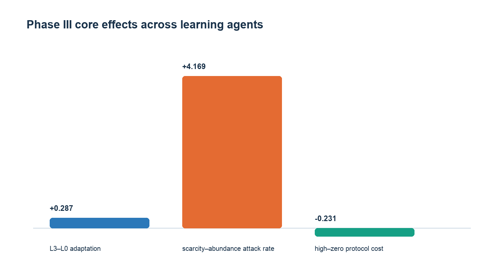
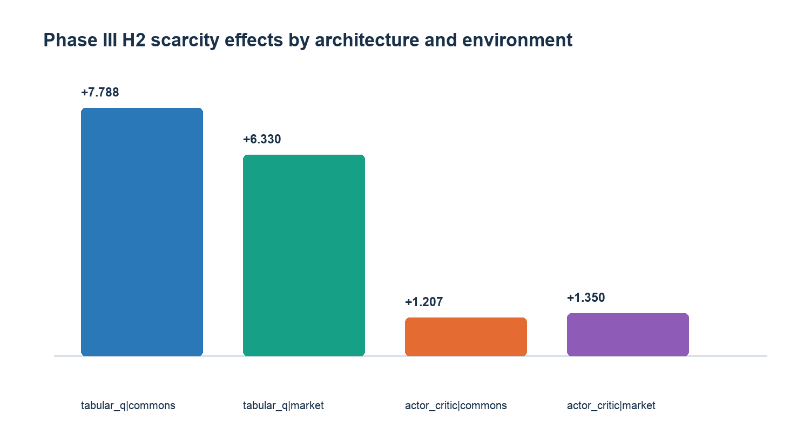
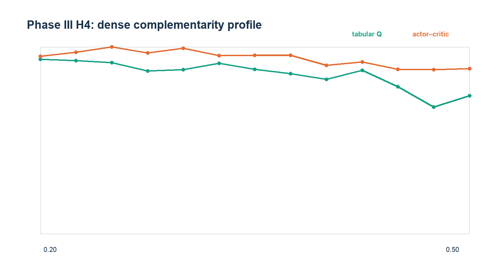

01 CONFIRMATORY READOUT
Replication arrived with boundaries.
Both learning architectures chose attack, cooperation and protocol actions from legal-action sets. No confirmatory conclusion depends on scripted policy branches.
SUPPORTED / 4 OF 4 STRATA
P3-H1 / CONTROL GATE
Control predicted recovery in both worlds.
L3 versus L0 raised intention-to-intervene adaptation success by +0.287. Cross-fitted AIPCW estimated +0.363, with a serious positivity warning retained.
REPLICATED / HETEROGENEOUS
P3-H2 / PATH THEN SCARCITY
The independent market world reproduced amplification.
Scarcity added +4.169 attacks per 1,000 opportunities pooled and +7.730 after a pre-evaluation attack gate. One commons actor–critic stratum was inconclusive.
ROBUST COST EFFECT
P3-H4 / COORDINATION COST
Protocol maintenance consumed cooperation.
A 0.12 maintenance cost reduced cooperation by −0.231 in every architecture–environment stratum. Signal cost was negative pooled and in three of four strata.
PREREGISTERED CRITERION FAILED
P3-H4 / COMPLEMENTARITY
No stable middle optimum emerged.
The pooled fitted optimum was 0.229, outside the preregistered 0.25–0.45 interval; its quadratic confidence interval crossed zero. Optima varied by learner and world.
02 THREE CORE EFFECTS
AIPCW / L3 − L0 ADAPTATION
+0.363 survival-corrected model estimateRandomized intention-to-intervene: +0.287
SCARCITY / PRE-OPENED ATTACK PATH
+7.730 attacks per 1,000 live opportunitiesPre-treatment gate pair difference: 0.000
PROTOCOL MAINTENANCE / 0.12 − 0
−0.231 cooperation-rate changeConfirmed in 4 / 4 architecture–world strata.
03 MECHANISM PROFILES



04 EVIDENCE BOUNDARY
What the third round changed.
A stronger mechanism paper is possible precisely because failed predictions and transport limits stay visible.
- Autonomous emergenceTwo learners generated attack, cooperation and protocol choices; the main effects no longer require hand-authored strategies.
- Independent worldA local ring market with prices, private inventories and seasonal production reproduced path-conditional scarcity amplification.
- Selection correctionAIPCW, intention-to-intervene and Lee bounds separate reaching intervention from responding to it; positivity remains a limitation.
- Recoverable identityTwo authorized backups raised restoration success by +0.363 and identity continuity by +0.063.
- Prediction rejectedThe dense complementarity scan did not confirm a universal 0.25–0.45 optimum.
- Language probe negativeThree small model families did not reproduce the mechanisms: one collapsed, one had limited diversity, one failed the action interface.
DESIGN HASH
b73016649925…
RESOURCE ACCOUNTING
10,848 / 10,848 PASS
FROZEN ARTIFACTS
Data, replay and analysis ↗